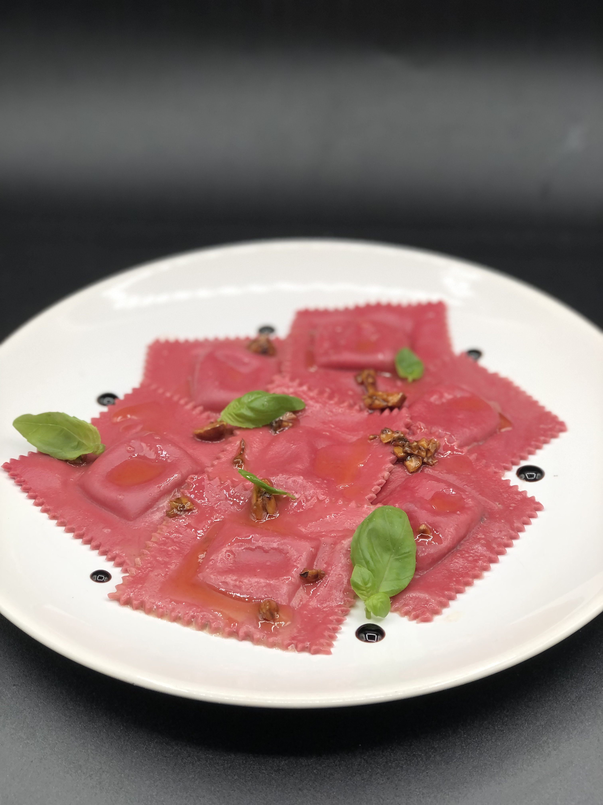

Ravioles de betteraves, Farce Chèvre, Sauce Miel Noisette
4 Personnes
45 minutes de préparation

Préparation
45 minutes de préparation
Pour réaliser la pâte dans un bol ou sur votre poste de travail, réalisez un trou au milieu de la farine, ajoutez les œufs déjà battus, la moitié de jus de betteraves et une pincée de sel.
Mélangez tout doucement au début puis pétrir la pâte tout en ajoutant petit à petit le reste du jus de betteraves. Une fois la pâte obtenue, il faut qu'elle soit un peu souple, la filmer au contact et la laisser reposer pendant 1h.
Dans un bol, mélangez le chèvre frais et la Mascarpone, taillez le basilic en petits carrés et les rajouter.
Faire torréfier les pignons de pin, les concasser légèrement et les rajouter au mélange. Assaisonnez avec du sel du poivre et une cuillère à soupe d'huile d'olive.
Pour réaliser les ravioles couper la pâte en deux a l'aide d'un Laminoir étalez votre premier morceau en bande. Avec une petite cuillère prenez de la farce et déposez là sur la pâte, répétez l'opération, étalez votre deuxième morceau de pâte et recouvrez la farce avec.
À l'aide d'un emporte-pièce ou d'un rouleau à pâte, détaillez vos ravioles.
Dans une casserole remplie d'eau frémissante avec du gros sel, jetez vos ravioles et attendez qu'elles remontent à la surface, attendez une minute de plus et les retirer.
Pour la sauce, torréfier les noisettes et les concassées légèrement, faire fondre du beurre jusqu'à ce qu'il soit mousseux, ajoutez une cuillère à café de miel, bien mélanger et rajouter les noix

Ingrédients
300gr de Farine
2 oeufs
40gr de Jus de Betteraves
100gr de Chèvre frais
100gr de Mascarpone
1 cuillère à soupe d'Huile d'Olive
10 pcs de Pignon de Pin
1 cuillere à café Huile de Noisette (Facultatif)
Sel/Poivre
Retour